L'esperienza dei nostri Chef e la tradizione si uniscono e creano un connubio di sapori nei nostri piatti di cucina.
Antipasti, primi e secondi per tutti i gusti preparati con prodotti italiani freschissimi e di altissima qualità che selezioniamo con cura,
per te.
Gli Antipasti
TAVOLOZZA PIEMONTESE con Vitello Tonnato, salame di Giora & tomini al bagnetto rosso
€ 18,00
BATTUTA DI VITELLO DI FASSONA con fonduta di Gorgonzola, tuorlo d'uovo & champignons tostati
€ 17,00
ALBESE AI 3 PEPI con carciofi & fonduta di Castelmagno
€ 17,00
FLAN DI CARCIOFI con fonduta di toma
€ 14,00
POLPO ARROSTICCIATO con purè di patate al profumo di lime & granella di pistacchi
€ 17,00
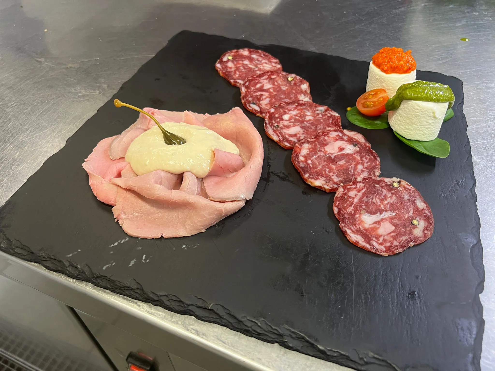
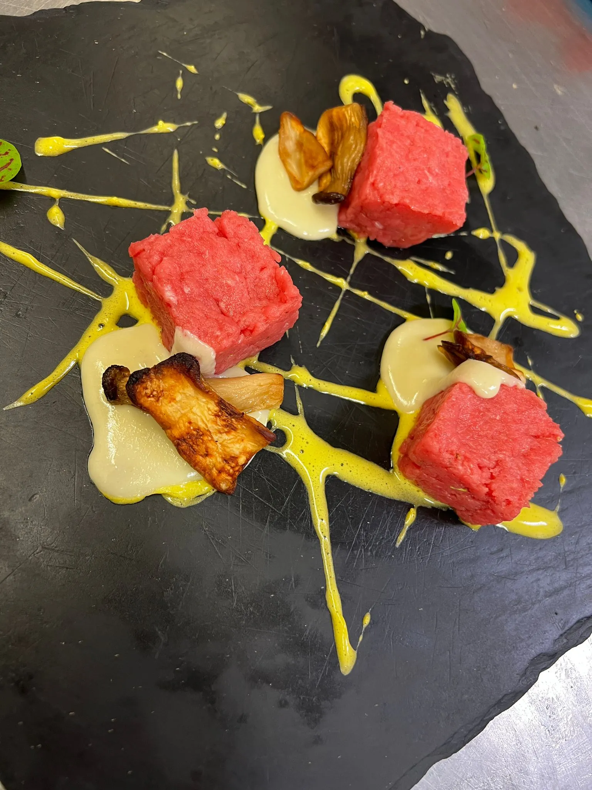
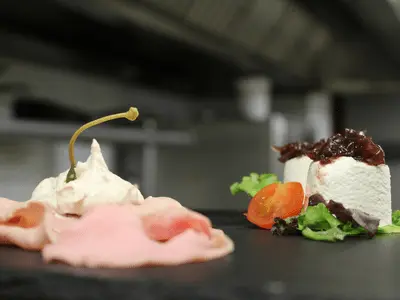
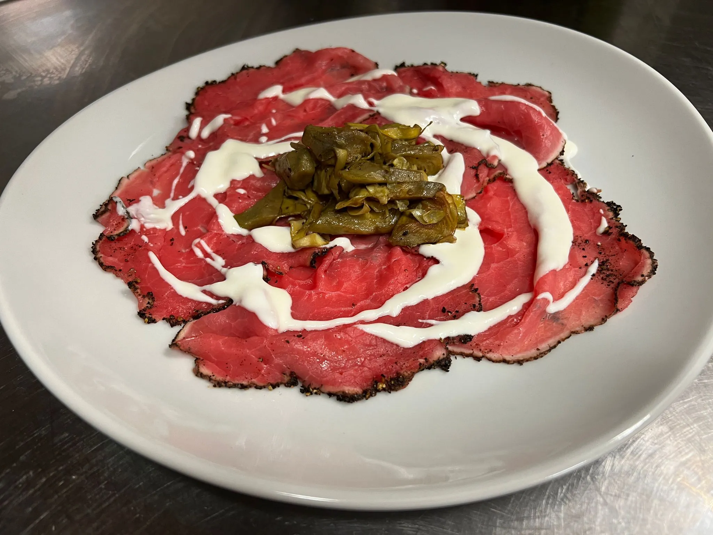
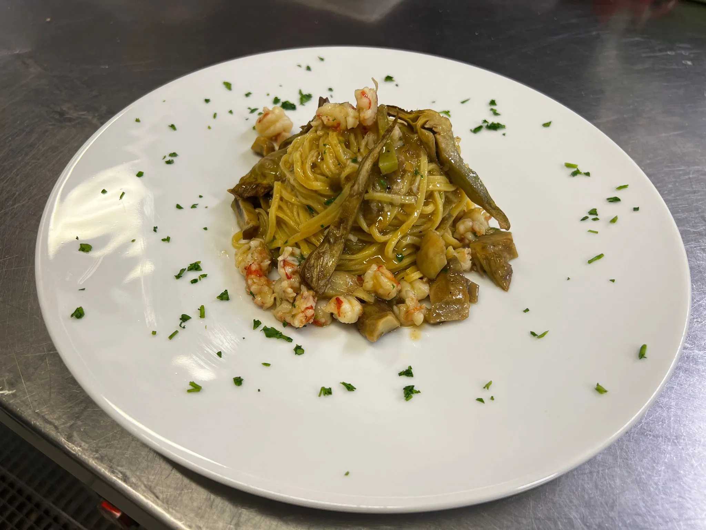
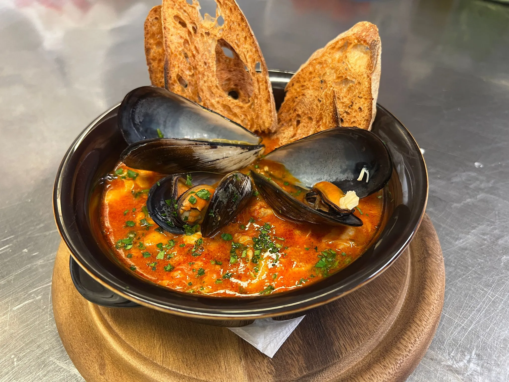
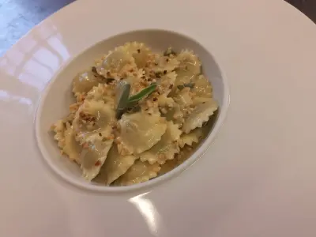
I Primi
ZUPPA DI PESCE con crostini di pane
€ 16,00
RISOTTO DI MARE carpaccio di gamberoni & salsa di agrumi
€ 15,00
TAGLIOLINI con crema di carciofi & gamberi
€ 15,00
AGNOLOTTI DEL PLIN al sugo d'arrosto
€ 16,00
PASTA & fagioli
€ 15,00
RAVIOLI MANTECATI al burro di montagna & salvia nostrana
€ 14,00
I Secondi
FILETTO DI FASSONA con agrumi, paprica & patate parigine
€ 26,00
ROLATA DI MAIALINO con salsiccia al sugo di arrosto
€ 18,00
TAGLIATA DI FASSONA con carciofi
€ 19,00
GAMBERONI AL FORNO lardellati & sfumati al Cognac
€ 18,00
SCOTTATA DI TONNO FRESCO marinata alle erbette
€ 18,00
FRITTURA DI PESCE (calamari & gamberi)
€ 18,00
Nota: Ogni secondo, tranne la frittura, è servito con un contorno
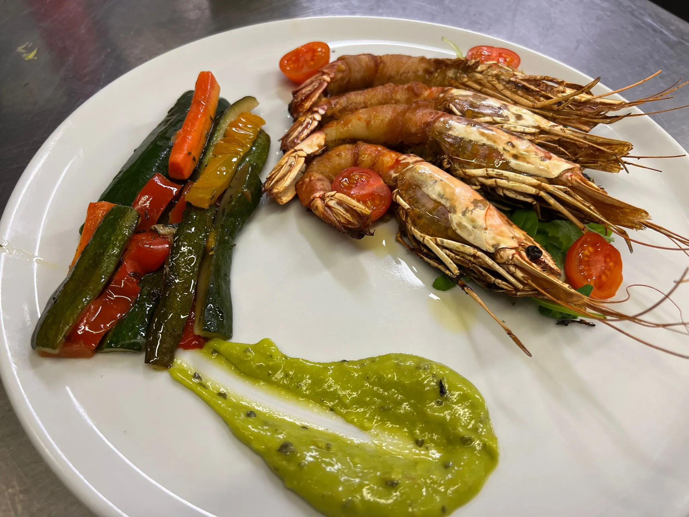
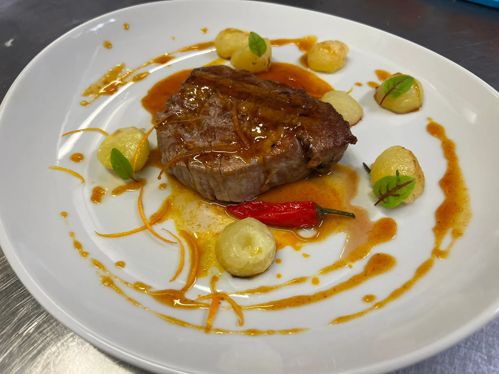
Gli Hamburger
DI VITELLA DI FASSONA
€ 14,00
Con pistacchi croccanti & fonduta di Toma Raschera
DI ANGUS ARGENTINO
€ 14,00
Con Marmellata di pere e dischi di cipolla
DI BUFALO
€ 14,00
Al profumo di senape grezza, Brie & composta di cipolle rosse
DI PATA NEGRA
€ 14,00
Con marmellata di pere, mousse di Gorgonzola dolce & bacon croccante
VEGETALE
€ 10,00
Con impanatura, fiocchi di Latte & pesto di rucola
 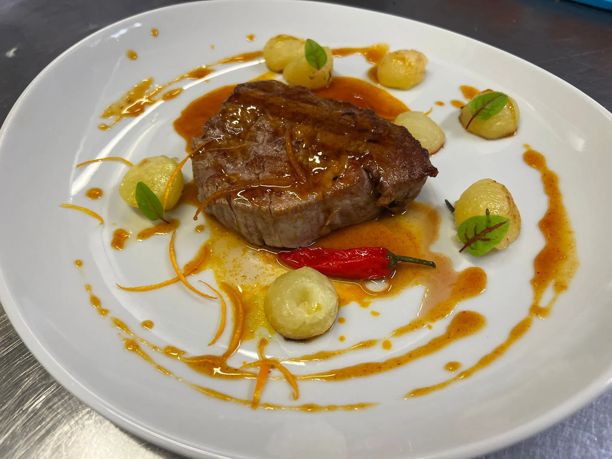
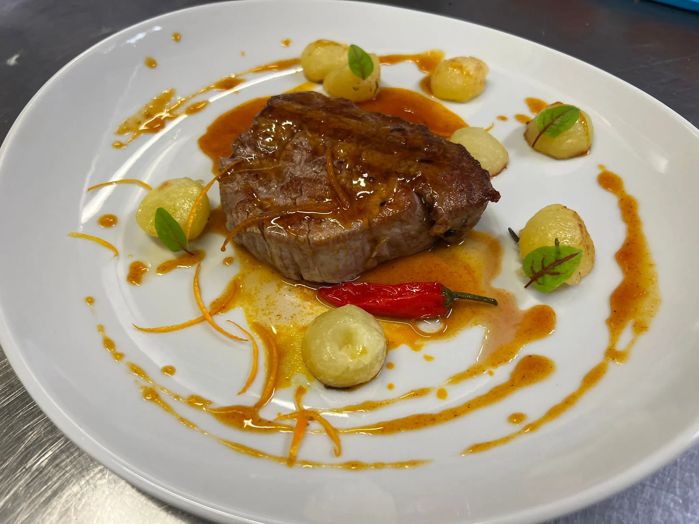